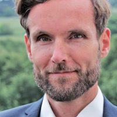
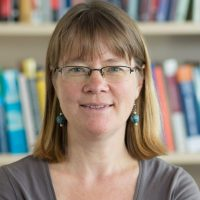
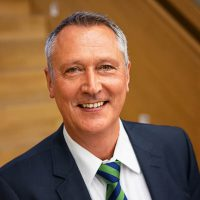
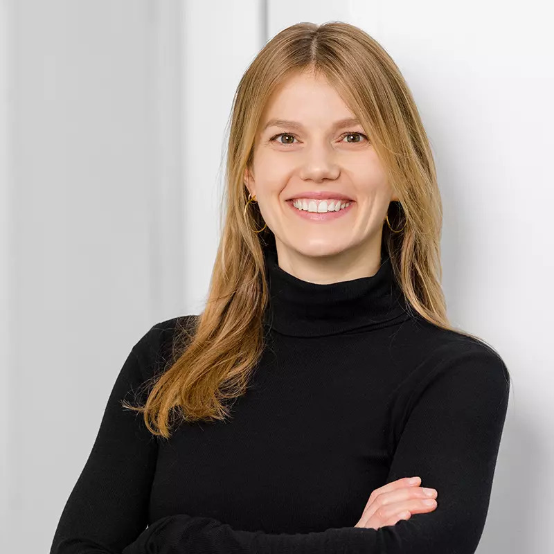
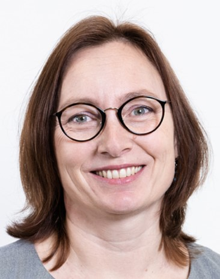

Katarina Boland is a postdoctoral researcher in the DKE and Computer Network groups at Heinrich-Heine-University Düsseldorf and part of the HeiCAD project "AI 4 All". Her research is concerned with NLP and the development of AI-based approaches for social scientific use-cases.
Stefan Dietze is a professor of Data & Knowledge Engineering at Heinrich-Heine-University Düsseldorf and Scientific Director of the department Knowledge Technologies for the Social Sciences at GESIS in Cologne. His research includes mining and interpretation of large amounts of heterogeneous data, in particular from the Web, using methods at the intersection of natural language processing, machine learning, and information retrieval.
Dimitar Dimitrov is a postdoctoral researcher at the department Knowledge Technologies for the Social Sciences at GESIS – Leibniz Institute for the Social Sciences (Cologne, Germany), leading the team Information Extraction and Linking. Dimitar was a visiting researcher at the Graz University of Technology, Graz, Austria, and at the eXascale Infolab at the University of Fribourg, Switzerland.
Laura Kallmeyer is a professor of computational linguistics at the Heinrich-Heine-University Düsseldorf. In her research, she focuses among others on automatically identifying structure and meaning in natural languages.
Christian Koß works as a doctoral candidate at the Heinrich Heine University Düsseldorf at the department of Communication Science. His main research interests lie in the field of Computational Social Science and Social Network Theory.
Frank Marcinkowski is a professor of political communication at the Department of Social Sciences at Heinrich-Heine-University Düsseldorf. His research and teaching areas include communication theories, political communication, and opinion formation of digitalization.
Philipp Meier works since April 2024 as doctoral candidate at the Heinrich Heine University in the computational linguistics department. His research interests lie in the field of meaning in languages and the application of language models.
Eva Rudholzer is a doctoral candidate at the everyday media lab at the Leibniz-Institut für Wissensmedien (IWM) in Tübingen. Her research interests lie in the field of science communication with a special focus on social media.
Sebastian Schellhammer is a doctoral Student at GESIS – Leibniz Institute for the Social Sciences since 2022, working on scientific online discourse using NLP and ML methods. Before, he completed his Master’s degree in Information Engineering and Management at the Karlsruhe Institute of Technology.
Sonja Utz (PhD 1999, Catholic University of Eichstätt) is the head of the everyday media lab at Leibniz-Institut für Wissensmedien in Tübingen and a full professor for communication via social media at University of Tübingen. Before moving to Tübingen, she held positions in Chemnitz, Amsterdam and Leeuwarden. Her research focuses on the effects of social and mobile media use, especially in knowledge related contexts, as well as on human-machine interaction.